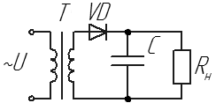
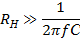
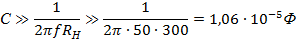

Расчет емкостного фильтра
Пример. Имеется источник переменного напряжения U=12 B (действующее значение). Сопротивление нагрузки Rн=300 Ом. Выпрямление будем производить одним диодом, а С-фильтр - сглаживающий элемент цепи (рис. 1).

Рис. 1 - Схема однополупериодного выпрямителя с емкостным фильтром
Порядок расчета
Необходимо учесть падение напряжения на диоде. Типовое значение этого параметра у большинства диодов для данной схемы равен 0,8 В (для мостовой схемы падение будет равно 0,8 + 0,8 =1,6 [В]).
Амплитуда переменного напряжения источника будет равна 17 В. Выходное напряжение будет иметь амплитуду:
Uвых = Umax - ΔU = 17 - 0,8 = 16,2 [В]
Таким образом, 16,2 В – максимально возможное напряжение на выходе выпрямителя при бесконечной емкости, но на практике значение будет меньшим.
Емкость фильтра находим из условия:

Откуда следует, что

Для хорошей работы фильтра выбираем емкость конденсатора не менее чем в 10 раз больше расчетного значения.
Источники:
h4e.ru - Особенности сглаживающих фильтров, их схемы и пример расчета